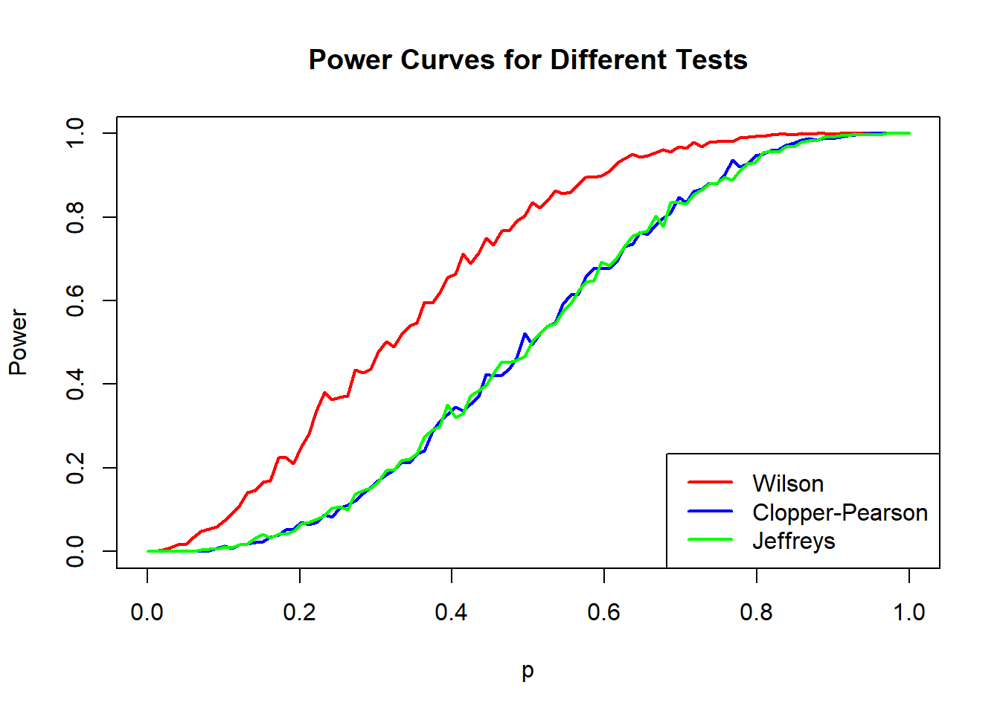
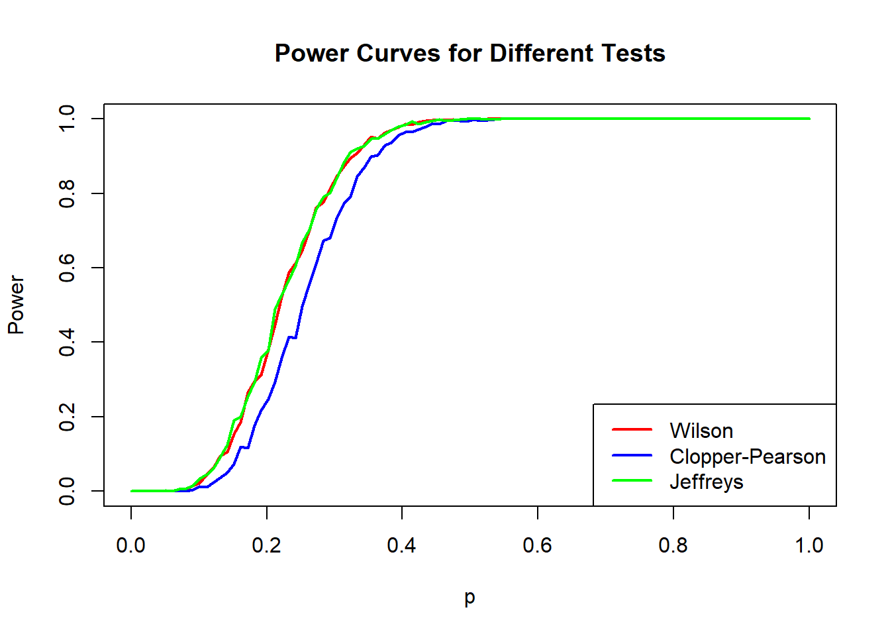
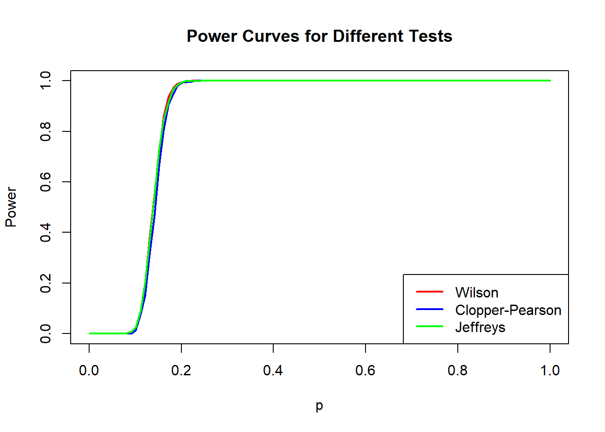

Warning: pakiet 'DescTools' został zbudowany w wersji R 4.4.2Sprawozdanie 2
- Wilson
\[ CI_W = \tilde{p} \pm z \sqrt{\frac{\tilde{p}(1 - \tilde{p})}{\tilde{n}}}, \] \[ \tilde{p} = \frac{x + z^2 / 2}{n + z^2}, \] \[ \tilde{n} = n + z^2, \]
\[ z \text{ – wartość krytyczna z rozkładu normalnego odpowiadająca } \frac{\alpha}{2}, \] \[ \tilde{p} \text{ – oszacowanie proporcji uwzględniające korektę,} \] \[ \tilde{n} \text{ – skorygowana liczba prób.} \]
- Clopper - Pearson
\[ L_{CP}(x) = \text{Beta}_{\alpha/2}(x, n - x + 1), \] \[ U_{CP}(x) = \text{Beta}_{1 - \alpha/2}(x + 1, n - x), \]
\[ x \text{ – liczba sukcesów,} \] \[ n \text{ – liczba prób,} \] \[ \text{Beta}_q(m_1, m_2) \text{ – } q\text{-kwantyl rozkładu beta z parametrami } m_1 \text{ i } m_2. \]
- Jeffreys
\[ L_J(x) = \text{Beta}_{\alpha/2}(x + 1/2, n - x + 1/2), \] \[ U_J(x) = \text{Beta}_{1 - \alpha/2}(x + 1/2, n - x + 1/2), \]
\[ x \text{ – liczba sukcesów,} \] \[ n \text{ – liczba prób,} \] \[ \text{Beta}_q(m_1, m_2) \text{ – } q\text{-kwantyl rozkładu beta z parametrami } m_1 \text{ i } m_2. \]
ZADANIE 1

Wyniki symulacji Monte Carlo, przedstawione na wykresie, pokazują funkcje mocy dla trzech różnych testów opartych na przedziałach ufności: Wilsona, Cloppera-Pearsona i Jeffreysa, przy liczności próby \(n=5\)
Dla wartości \(p\) bliskich hipotezie zerowej \(p=0.1\) wszystkie trzy testy mają moc zbliżoną do poziomu istotności \(α=0.05\), co świadczy o ich poprawnej kalibracji przy założeniu, że hipoteza zerowa jest prawdziwa. W tym zakresie różnice pomiędzy testami są minimalne i mają niewielki wpływ na ich zastosowanie.
Gdy wartości pp wyraźnie przekraczają \(p_0=0.1\), test Wilsona osiąga najwyższą moc spośród trzech testów. Oznacza to, że jest najbardziej skuteczny w odrzucaniu hipotezy zerowej, gdy parametr pp odbiega od wartości określonej w \(H_0\). Testy Cloppera-Pearsona i Jeffreysa mają niemal identyczną funkcję mocy i osiągają niższą moc niż test Wilsona w całym zakresie wartości \(p>0.1\). Sugeruje to, że test Wilsona jest bardziej efektywny w tej sytuacji, szczególnie gdy zależy nam na szybszym wzroście mocy testu.
Dla wartości pp bliskich 1 wszystkie testy osiągają bardzo wysoką moc , co oznacza, że przy dużym odchyleniu od \(p_0\) są one równie skuteczne w odrzucaniu hipotezy zerowej. Różnice między nimi w tym zakresie stają się marginalne.
Porównując poszczególne testy, widać, że test Wilsona wyraźnie przewyższa dwa pozostałe testy pod względem szybkości wzrostu mocy, co czyni go najlepszym wyborem w tej sytuacji.
ZADANIE 2

Analizując funkcje mocy testów przy \(n=30\), widzimy, że testy Wilsona i Jeffreysa mają niemal identyczne wyniki. Oznacza to, że oba testy mają bardzo zbliżoną zdolność do odrzucenia hipotezy zerowej \(H_0 : p=0.1\), gdy prawdziwa wartość p odbiega od wartości wynikającej z hipotezy. Test Cloppera-Pearsona ma zauważalnie niższą moc, co sugeruje, że jest bardziej konserwatywny – mniej skłonny do odrzucania \(H_0\), nawet jeśli \(H_1\) jest prawdziwe. Wszystkie testy mają podobną moc bliską poziomowi istotności \(α=0.05\) w pobliżu wartości \(p_0\), co jest oczekiwanym zachowaniem wynikającym z konstrukcji testów. Różnice między nimi stają się widoczne, gdy \(p\) oddala się od \(p_0\).
Moc testu Cloppera-Pearsona jest niższa w całym zakresie \(p\), co sugeruje, że metoda ta jest bardziej konserwatywna. Metoda Cloppera-Pearsona konstruuje przedziały ufności poprzez dokładne podejście. Choć daje gwarancję zachowania poziomu istotności, prowadzi do bardziej konserwatywnych wyników, co skutkuje niższą mocą testu w porównaniu z Wilsonem i Jeffreysem.
ZADANIE 3

Dla \(n=250\) , wszystkie trzy testy – Wilsona, Cloppera-Pearsona i Jeffreysa – mają niemal identyczne funkcje mocy. Na przedstawionym wykresie widać, że krzywe dla wszystkich testów idealnie się pokrywają, co wskazuje, że testy te działają w praktyce w taki sam sposób dla tej wielkości próby. Wyniki sugerują, że dla bardzo dużych próbek różnice między testami stają się minimalne. Przy tej liczebności próby moc testów jest zdominowana przez informację statystyczną zawartą w danych, a różnice wynikające z konstrukcji przedziałów ufności poszczególnych testów stają się pomijalne.